Обучение: больше места для фото и текста
Настоящие снимки Android-эмулятора Pixel6 API35, APK0.70. Проверены все четыре шага: запуск сразу горизонтально, поворот каждого шага из вертикального режима и шрифт150%.
Одна верхняя строка вместо двух. Доступная высота основной области увеличена с480 до649 пикселей (+35,2%). На обычном шрифте все три основных пункта помещаются. При крупном шрифте прокручивается только текст справа; фотография и кнопки остаются видны.
Физический Samsung не проверен. Снимки не заменяют тесты реального телефона. Исходные PNG не изменены; подписи «до/после» добавлены только вокруг сравнений.
Скачать все снимки и результаты ZIP · Результаты измерений · Прогон Android
До и после · 0.69 → 0.70
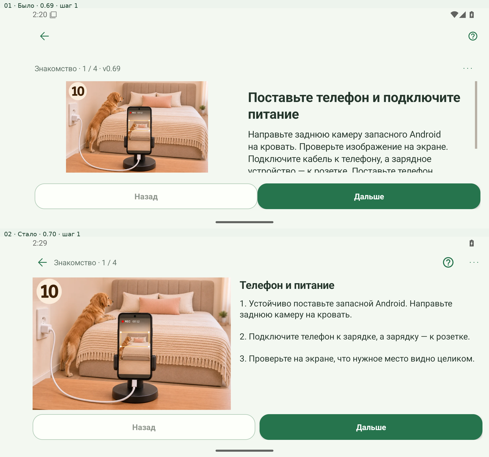
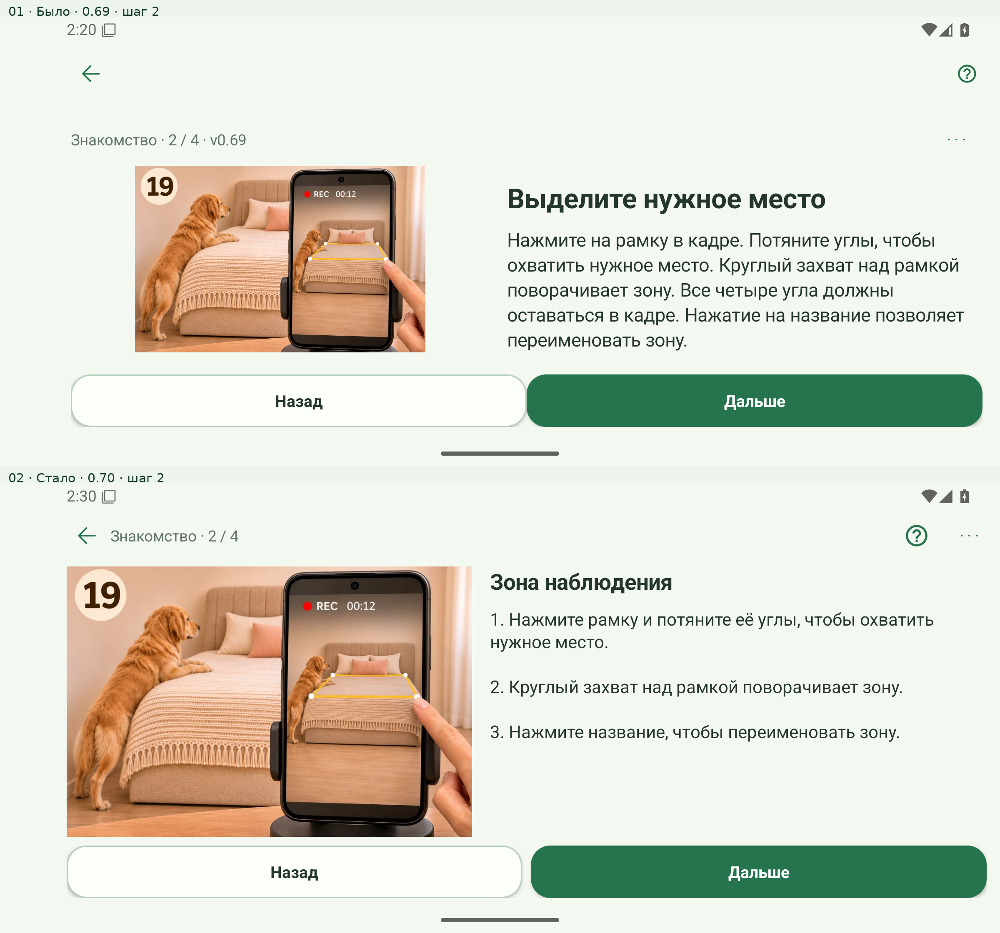
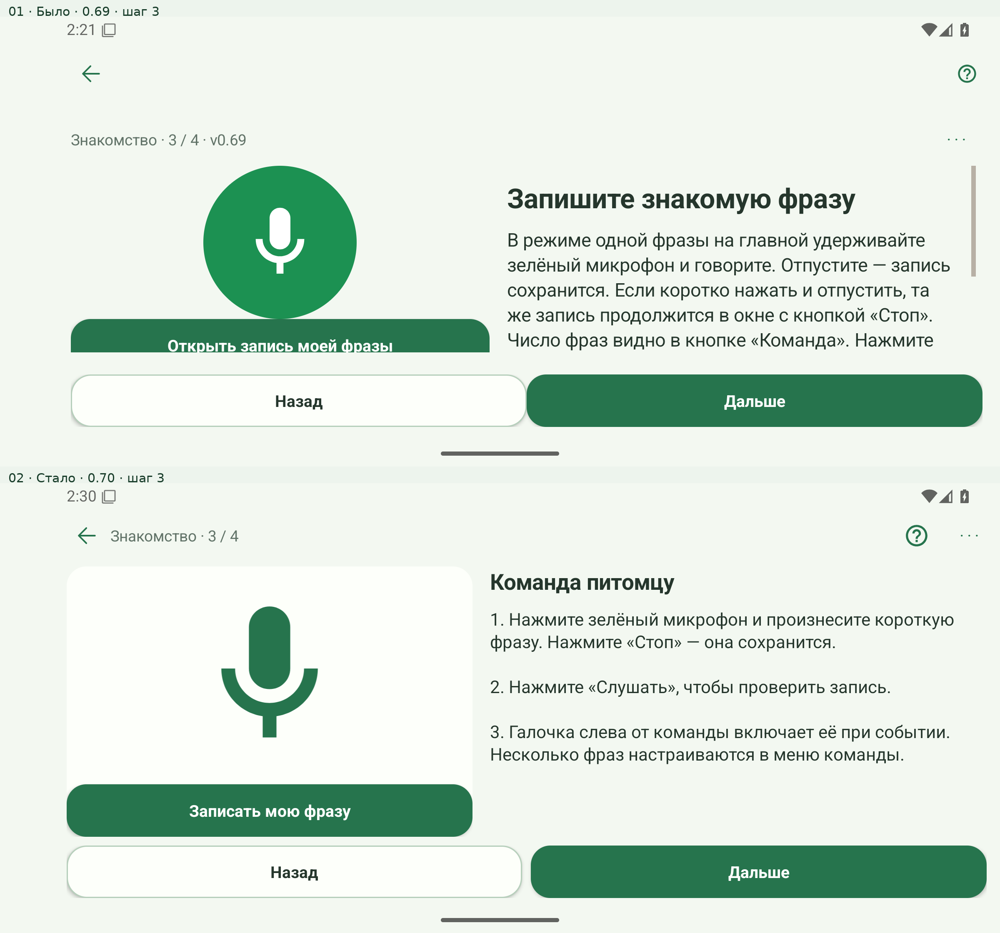
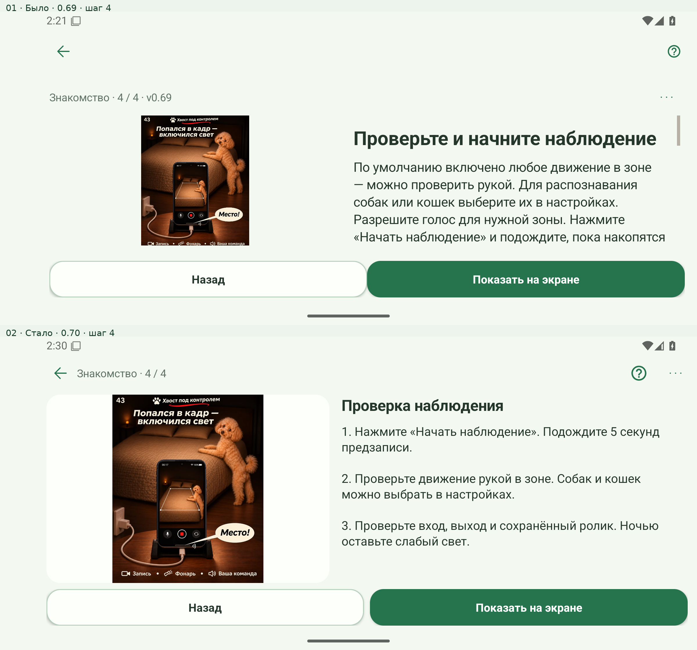
Запуск сразу в альбомном режиме
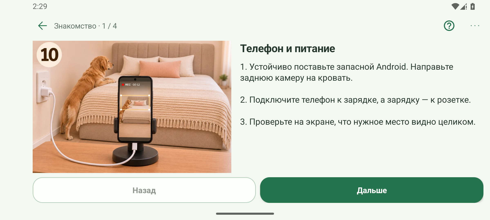

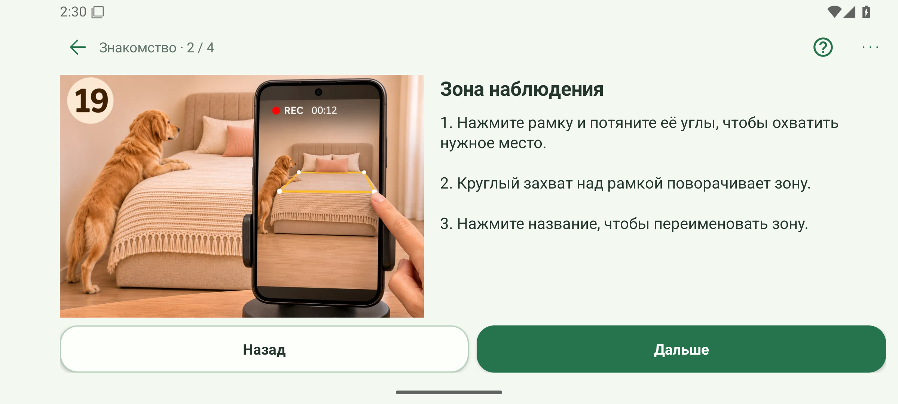

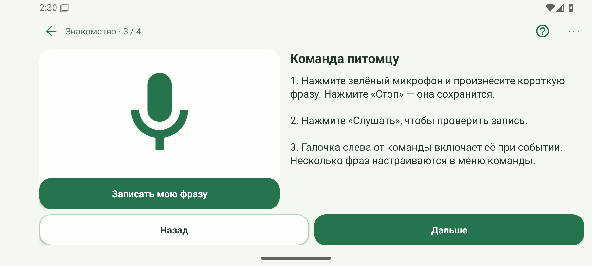
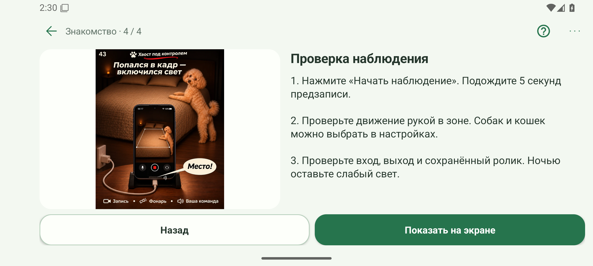

После поворота из вертикального режима


Крупный шрифт 150%

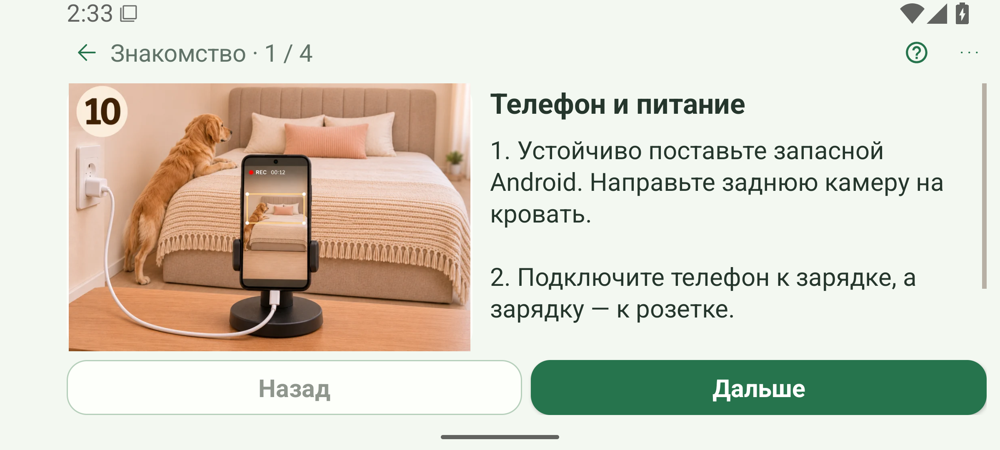

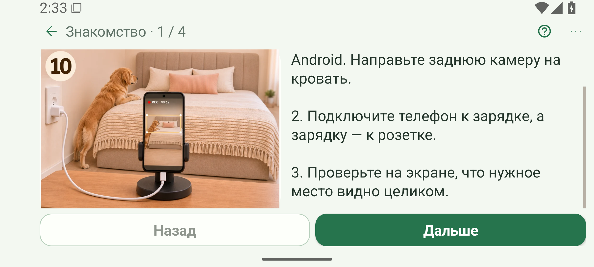

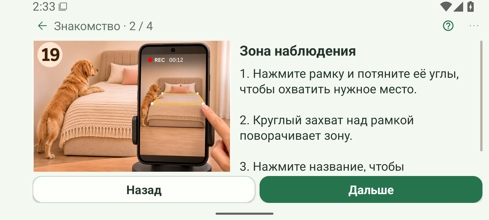

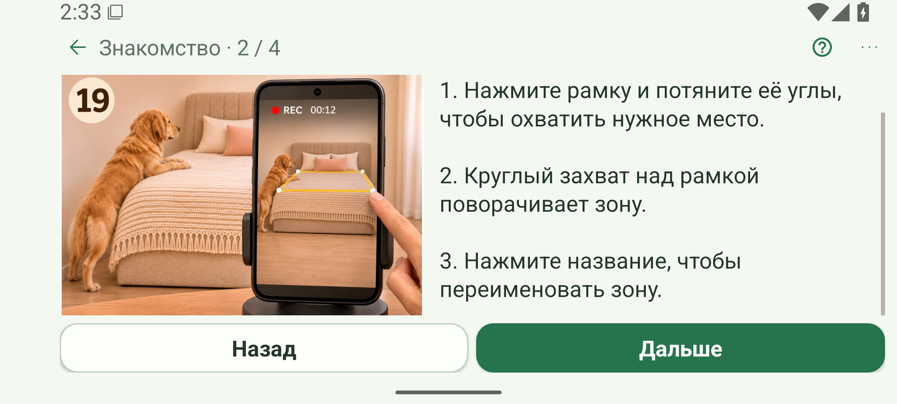

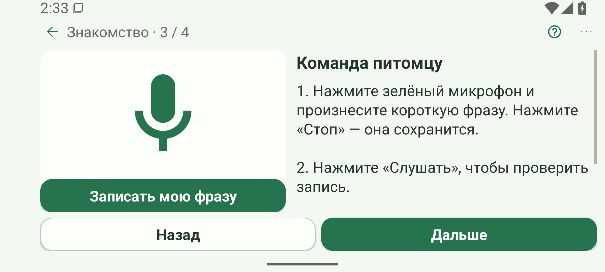

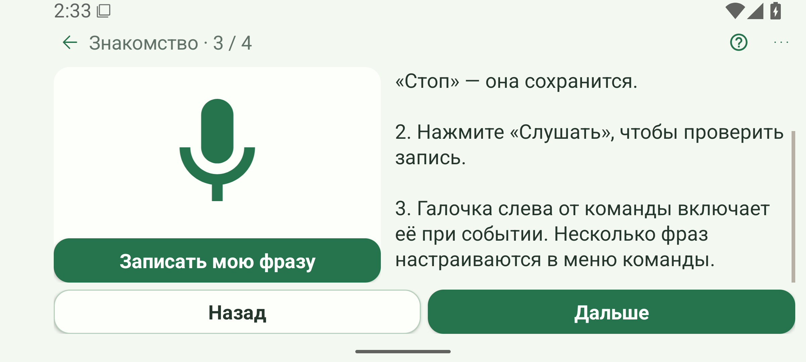

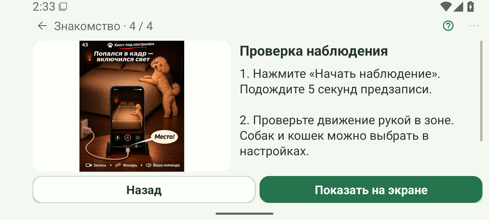

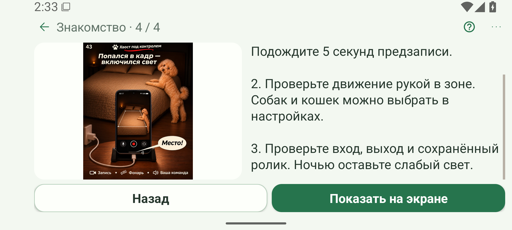
Проверка записи
Ролик, сообщение о сохранении и журнал часов кодировщика →
Один ролик сохранён после задержки модели7,8/12,7с; ошибок недоступной истории0. Это эмулятор, не физический Samsung.
Что проверено
- Телефон и питание — фотография и три пункта видны.
- Зона наблюдения — жесты и переименование описаны, фото остаётся на месте.
- Команда питомцу — кнопка записи полностью видна, текст не перекрывает её.
- Проверка наблюдения — последняя строка доступна, нижние кнопки остаются на экране.
Во всех12 случаях XML-границы фотографии одинаковы до и после прокрутки. Границы текста расположены выше нижних кнопок.